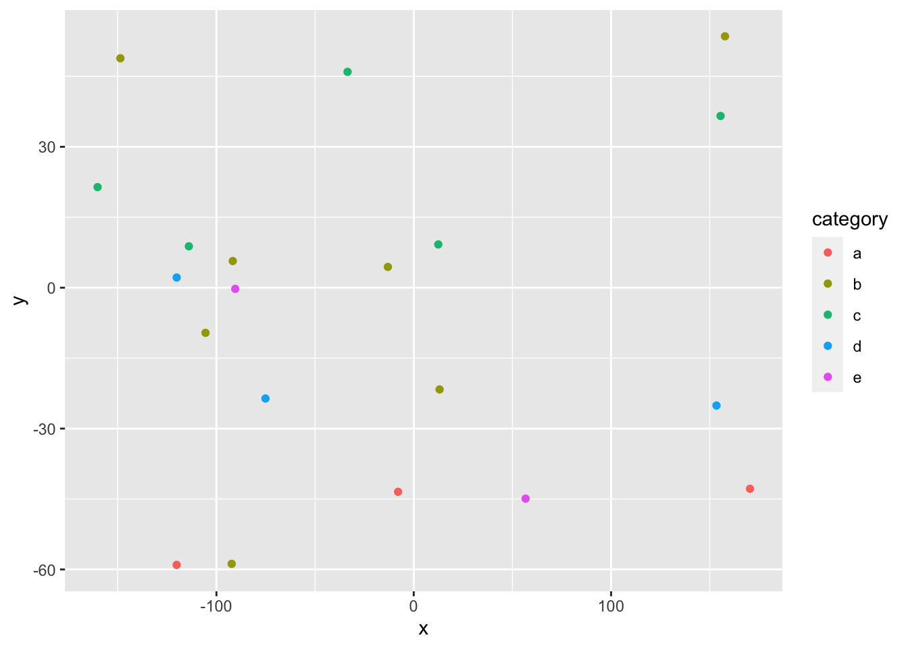

Environmental justice mapping can be easily done with the EPA’s EJSCREEN tool (https://ejscreen.epa.gov/mapper/). This mapping tool provides a great introduction to analyzing and comparing environmental justice issues, but if this were implemented in an upperclassmen college lab, this would not suffice for a three hour lab. Not only is mapping a useful skill, but understanding how to map in RStudio is very beneficial. The overall goal is to develop a step-by-step lab for students to create environmental justice maps in RStudio that are similar to EJSCREEN. The end product the maps will thus be presented in this project.
Low-income and race are key indicators to observe when analyzing environmental justice. In the context of Western New York, how have these marginalized communities been impacted unequally compared to higher-income and white neighborhoods? How can students observe the hazardous environmental impacts marginalized communities face? Exploration and comparison of environmental injustice will help students understand the core inequalities issues in Western New York. Therefore, I hypothesize that the lower-income and black neighborhoods will live closer to sites that have been or are in the process of being remediated. Despite the fact that some sites will be remediated already, this is still an indicator that the site was once contaminated, so it historically shows contamination marginalized communities have lived near.
Accessing Census Data
library(tidycensus)
library(tidyverse)
loadacs5 <- load_variables(2018, "acs5", cache = TRUE)
api_key <- census_api_key("41d82fe746ff3e071dc59dfe43267b617e210820", overwrite = TRUE, install = TRUE)## Your original .Renviron will be backed up and stored in your R HOME directory if needed.## Your API key has been stored in your .Renviron and can be accessed by Sys.getenv("CENSUS_API_KEY").
## To use now, restart R or run `readRenviron("~/.Renviron")`tract_income <- get_acs(geography = "tract", variables = "B25121_001", state = "NY", county = c("Erie", "Niagara", "Cattaraugus", year = 2018))## Getting data from the 2014-2018 5-year ACShead(tract_income)
knitr::kable(tract_income, "simple")n=20
data=data.frame(x=runif(n,-180,180),
y=runif(n,-60,60),
size = runif(n, 5, 20),
category = factor(
sample(letters[1:5], n, replace = TRUE)
),
value = rnorm(n))data %>%
slice(1:10) %>% #show only 1:n rows
kable(digits=2,align="c")%>% #make table and round to two digits
kable_styling(bootstrap_options =
c("striped", "hover", "condensed", "responsive")) #apply other formatting| x | y | size | category | value |
|---|---|---|---|---|
| -105.53 | -9.61 | 14.59 | b | 0.03 |
| -75.16 | -23.60 | 6.67 | d | -1.22 |
| -91.73 | 5.68 | 11.65 | b | -0.16 |
| 153.41 | -25.10 | 14.23 | d | 0.17 |
| 157.74 | 53.53 | 5.14 | b | 0.43 |
| 56.69 | -44.91 | 5.75 | e | 0.08 |
| -13.11 | 4.43 | 11.47 | b | 1.36 |
| -120.15 | -59.03 | 11.14 | a | 0.46 |
| -148.67 | 48.85 | 14.68 | b | 0.81 |
| -92.26 | -58.81 | 5.73 | b | 0.33 |
Add any additional processing steps here.
[~200 words]
Tables and figures (maps and other graphics) are carefully planned to convey the results of your analysis. Intense exploration and evidence of many trials and failures. The author looked at the data in many different ways before coming to the final presentation of the data.
Show tables, plots, etc. and describe them.
m <- leaflet(data) %>%
addTiles() %>%
addCircleMarkers(~x, ~y, radius = ~size,color = ~as.factor(category)) %>%
addPopups(~x[2], ~y[2], "Random popup")
m # a map with the default OSM tile layerMap of completely random data
data %>%
ggplot(aes(x=x,y=y,col=category))+
geom_point()
[~200 words]
Clear summary adequately describing the results and putting them in context. Discussion of further questions and ways to continue investigation.
All sources are cited in a consistent manner